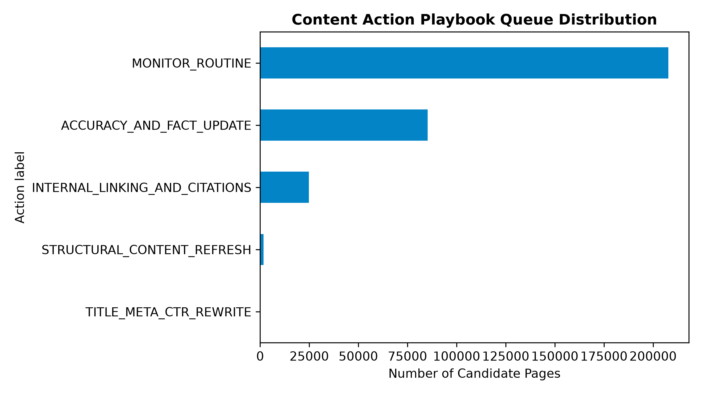

1. Introduction / Problem Statement
Maintaining content relevance across large-scale web properties is a continuous search-optimization challenge. Editorial teams have limited capacity, while a static audit rule can over-select thin pages, underweight domain context, and mistake temporary traffic variation for durable decay.
This study asks whether a learned ranking can prioritize pages for review using only signals available before a decision date. The intended outcome is not automated publishing or a ranking guarantee; it is a better ordered list for a human reviewer to investigate.
2. Data Contract & Slice
The analysis joins dim_content with the March 2026 partition of fact_content_daily_performance. The unit of analysis is a content item paired with its pseudonymized client. Static metadata contributes word_count; daily Search Console measures contribute the pre-decision signals.
Target-derived fields including trend_direction and trend_pct are excluded from the feature matrix. Client and content IDs are used for joining and grouping only, never as predictive inputs.
3. Methodology & Validation Design
The model is a Random Forest classifier with 100 trees, maximum depth 8, minimum leaf size 20, and a fixed random seed. Its probability output ranks pages for Precision@50. The frozen heuristic baseline combines normalized impression volume, click-through deficit, and a thin-content indicator.
The primary evaluation uses GroupShuffleSplit by client_id: 39 clients train the model and 13 clients are held out entirely. A temporal query assertion confirms that feature rows end on March 15 and contain zero post-cutoff rows. This design tests transfer to unseen domains rather than rewarding memorization of pages from a known client.
4. Results & Empirical Comparison
All headline metrics below are measured on the same unseen-client test split. The grouped test base rate was 0.168; Precision@50 therefore describes the observed share of the top 50 candidates matching the historical decline proxy.
| System | Precision@50 | ROC-AUC | Brier Score |
|---|---|---|---|
| Week-4 heuristic baseline | 0.460 | 0.767 | 0.183 |
| Random Forest, client-grouped | 0.740 | 0.854 | 0.117 |
Interpretation
The grouped model improves ranking precision by 0.280 over the heuristic baseline on this historical proxy. Its leading fitted features were 15-day impressions, active days, and average position. These are descriptive model signals, not causal explanations of why a page changes performance.
The Week 6 audit also showed why split design matters: a naive random split produced ROC-AUC 0.890, while the client-grouped estimate was 0.854. The gap is evidence that shared client context can inflate apparent generalization.

5. Limitations & Honest Framing
- Proxy target: The label is an observed 15-day impression comparison, not a deterministic measure of content quality or future traffic.
- External volatility: The model cannot observe sudden algorithm updates, macro demand changes, SERP layout changes, or tracking disruptions.
- Domain transfer: New clients with different measurement setups require a warm-up observation period; grouped validation is evidence of transferability, not proof for every future domain.
- Operational evidence: Retrospective Precision@50 does not establish that an editorial intervention caused traffic recovery.
6. Ranked Recommendations: Content Action Playbook
Risk scores become review priorities through a transparent mapping. High-risk rows are still candidates for review, not automatic instructions.
| Risk tier | Reason code | Recommended action | Human decision boundary |
|---|---|---|---|
| High: P ≥ 0.70 | HIGH_IMPRESSION_ZERO_CLICK | TITLE_META_CTR_REWRITE | Review intent, title, snippet, and current demand. |
| High: P ≥ 0.70 | THIN_CONTENT_DECAY | EXPAND_COMPREHENSIVE_DEPTH | Expand only when the search intent requires it. |
| Medium: 0.40 ≤ P < 0.70 | RANKING_EROSION | INTERNAL_LINKING_AND_CITATIONS | Audit internal authority and source coverage. |
| Low: P < 0.40 | STABLE_OR_LOW_RISK | MONITOR_ROUTINE | Avoid unnecessary intervention. |
Human review and no-go boundaries
- Verify search intent and page type before changing content depth.
- Check current Search Console data and recent publishing history.
- Never auto-publish AI-generated rewrites without editor sign-off.
- Never automate canonical changes, URL deletion, or redirects without technical SEO approval.
- Never bulk-modify medical, legal, compliance, privacy, terms, or regulatory pages.
- Exclude branded, checkout, pricing, and navigational core pages from bulk heuristics unless owners opt in.
7. Reproducibility
The executed analysis and artifact receipts are available in the public repository. The model uses fixed seeds, a documented March cutoff, and a client-grouped split.
8. Acknowledgments & Data Credit
Built on the FlyRank ML Internship dataset. Thanks to the FlyRank team for the internship framework, anonymized data release, and emphasis on honest validation.